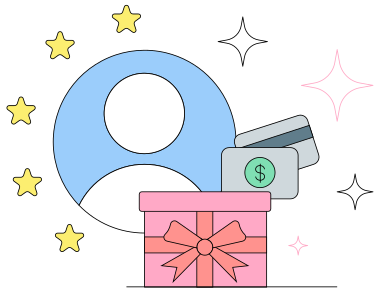

En 2021, las empresas de todo el mundo invirtieron $24 billones de dólares en herramientas tecnológicas con el objetivo de optimizar sus procesos de RR.HH y garantizar la máxima eficiencia para sus equipos. Según el informe 2023 de HRTech, una mayor adopción de la tecnología se encuentra entre las principales prioridades de los equipos de RR.HH, que quieren aumentar la retención y la productividad de los colaboradores y reducir los costos comerciales en 2023 y a futuro.
Sin embargo, las startups no suelen centrarse en introducir tecnología de RR.HH hasta que la gestión de datos de los colaboradores empieza a dificultar el escalado debido a:
- Inconsistencias de datos en diferentes herramientas
- Riesgos de compliance global
- Procesos lentos y repetitivos propensos al error humano
- Falta de visibilidad de los datos que impide tomar decisiones bien informadas
Para evitar estos problemas, las startups deberían implementar un SIRH en una etapa temprana y no tienen que arruinarse para hacerlo. Deel es el único proveedor de RR.HH realmente global que es completamente gratuito para empresas con hasta 200 colaboradres, y así es como ayuda a las startups escalar sin problemas.
Asegura los mejores talentos y contrata más rápido
Las startups generalmente escalan muy rápido, lo que requiere que sus equipos hagan todo lo posible para cubrir todas las necesidades de los clientes. Para evitar las consecuencias negativas del hipercrecimiento, como tiempos de respuesta prolongados, demasiadas escaladas y burnout de los colaboradores, estas deben contratar de manera rápida y rentable. Obtener talento del pool global es una excelente solución para las startups, pero también es complicado porque generalmente estas no tienen:
- Entidades propias en otros países
- Suficiente conocimiento sobre el compliance global
- Recursos para patrocinar visas y trasladar colaboradores
Deel ayuda a las startups a asegurar los mejores talentos y a contratarlos rápidamente, sin temor a que estos abandonen el proceso de contratación porque lleva demasiado tiempo. Nuestra plataforma todo en uno te permite contratar personas en más de 150 países, ya sean freelancers o colaboradores.

Con Deel, puedes:
- Administrar colaboradores de tiempo completo y freelancers en una misma plataforma
- Pagar a tu equipo rápidamente en 200 monedas, usando múltiples métodos de pago
- Obtener soporte migratorio y de solicitud de visas
- Ofrecer perks especiales a los freelancers, como la Deel Card
- Llevar a cabo el proceso de onboarding de nuevos miembros del equipo en siete minutos
Consolida los datos del personal
Una pequeña empresa puede beneficiarse de una base de datos bien organizada, y más aún una empresa de rápido crecimiento con una fuerza laboral distribuida en todo el mundo. Cuando tu departamento de HR usa hojas de cálculo para administrar la nómina, hacer seguimiento del tiempo libre de los colaboradores o simplemente almacenar datos del personal, corre múltiples riesgos:
- Privacidad y seguridad de datos debido a posibles filtraciones y exposición a personas no autorizadas
- Errores en la entrada manual de datos o cálculos
- Riesgos de compliance debido a documentación incompleta o plazos incumplidos
Con las numerosas integraciones de Deel, puedes almacenar, organizar y analizar todos estos datos en un sistema automatizado con un riesgo mínimo de noncompliance o error humano. Esta consolidación de datos también reduce el trabajo manual y ahorra tiempo a varios departamentos y garantiza la coherencia del proceso en todas las ubicaciones, mejorando también la experiencia de los colaboradores.
Consulta nuestras integraciones para contabilidad, gestión de presupuestos, sistemas de seguimiento de candidatos (ATS), gestión del desempeño, etc.

Agiliza los procesos de RR.HH.
Los procesos lentos de recursos humanos que involucran múltiples puntos de contacto para completar una tarea simple contribuyen a la ineficiencia general de la empresa, lo que perjudica el compromiso y la felicidad de los colaboradores. La agilización de los procesos de RR.HH permite que todo el equipo haga las cosas más rápido, promoviendo la autonomía y una cultura empresarial productiva y orientada al futuro.
Al automatizar los procesos de RR.HH y consolidar los datos de los empleados, las startups pueden ahorrar mucho tiempo que se puede utilizar para perfeccionar el producto y crear procesos escalables que respaldarán a la empresa a medida que crece. El proceso debe ser automatizado si:
- Implica trabajo repetitivo y procesamiento una gran cantidad de datos.
- Ocurre con frecuencia y casi siempre sigue los mismos pasos
- Puede representar un riesgo de compliance para la empresa
- Puede mejorar la experiencia de los colaboradores si se simplifica
- Tiene un impacto en el crecimiento de la empresa
Deel HR está diseñado para equipos globales como el tuyo: nuestros flujos de trabajo personalizables se adaptan a los requisitos específicos de cada país, por lo que nunca tendrás que enfrentarte a campos obligatorios no aplicables ni interrumpir tus procesos habituales.
Puedes automatizar todo tu proceso de contratación, onboarding, gestión de documentación de compliance, procesamiento de nómina, offboarding, etc.
Por ejemplo, en nuestro Workflow Builder, puedes configurar un trigger que envíe un emailo de bienvenida automático o un recordatorio para leer el manual del colaborador a los nuevos miembros del equipo.

Simplifica la nómina global
Al tener un equipo distribuido, las startups suelen luchar por encontrar una solución perfecta que les permita pagar a sus colaboradores locales e internacionales y sus freelancers de la manera más eficiente posible. Para llevar a cabo las tareas de RR.HH generalmente se necesita de múltiples herramientas para gestionar todos estos pagos y administrar los beneficios, declarar impuestos y mantener registros según sea necesario.
Más de 15.000 empresas han optado por optimizar las operaciones de nómina global con Deel. Gracias a nuestro soporte confiable y rápido y a nuestra experiencia interna, puedes:
- Unificar todos tus procesos de RR.HH y nómina en una sola plataforma
- Consolidar tus datos en todas las ubicaciones
- Evitar el uso de múltiples proveedores y partners locales para procesar la nómina
- Tener acceso a análisis globales para comprender mejor tus gastos
La nómina no tiene por qué ser la función de RR.HH más temida, ya que Deel se encarga de lo siguiente:
- Beneficios a los colaboradores y retenciones
- Creación y entrega de recibos de pago
- Declaración de impuestos locales ante las autoridades
- Pagos de salarios e indemnizacionesAuto-registro en nómina durante la etapa de creación de contrato para nuevas contrataciones
Garantiza el compliance al 100%
Las empresas de EE.UU. que no clasifican a su gente correctamente están sujetas a multas por infracciones de leyes federales y fiscales, demandas e incluso tiempo en la cárcel, así como a daños a la reputación del empleador. La clasificación es solo un ejemplo de las normas de compliance que debes seguir al contratar a nivel mundial, mientras se garantiza la privacidad y seguridad de los datos y se guardan registros de toda la documentación en caso de una auditoría.
Las startups generalmente carecen de la experiencia o los recursos para contratar profesionales de RR.HH internos para controlar el compliance de cada país en el que contratan. Al subcontratar a Deel para estos temas, cuentas con:
- Más de 200 expertos legales que se aseguran de que tus contratos cumplan con todos los requisitos legales locales y estén actualizados
- Compliance completo en relación a la ley de privacidad y GDPRUna visión general clara de toda la documentación de compliance en un dashboard ordenado
La plataforma Deel te permite hacer lo siguiente:
- Editar, enviar y firmar contratos en minutos
- Generar contratos localizados para colaboradores y freelancers independientes
- Recopilar automáticamente permisos de trabajo, formularios de impuestos y otros documentos de compliance
- Mantener los registros de papeleo organizados y fácilmente accesibles
- Ofrecer beneficios s tus colaboradores sin problemas
- Proteger a tu empresa de los riesgos de clasificación errónea con Deel Shield
Crea una experiencia inigualable para tus colaboradores
Los equipos distribuidos pueden tener dificultades para mantener una cultura empresarial solida que traspase fronteras y para crear una experiencia equitativa para todos.
No poder trabajar juntos fisicamente a veces dificulta que las personas se sientan conectadas entre sí o con los valores fundamentales de la empresa. Por lo tanto, los fundadores de startups y los líderes de RR.HH deben aprovechar la tecnología para:
- Crear un ambiente de trabajo de apoyo para los trabajadores de diferentes orígenes.
- Habilitar las condiciones para un trabajo eficiente y la colaboración entre ubicaciones y zonas horarias
- Garantizar beneficios y perks equitativos para todos los miembros del equipo desde el primer día

Ahí es donde entran los plugins de Deel Engage para Slack. Estas herramientas fáciles de usar ayudan a impulsar la participación de los colaboradores en tu equipo a través de procesos automatizados, sin que tengan que salir de Slack para completar una acción.
- Asignar automáticamente tareas durante el proceso de onboarding para mejorar la experiencia
- Mantenerte al tanto de cómo se siente tu equipo a través de encuestas atractivas y personalizables
- Mejorar la estructura de tus reuniones uno a uno agregando puntos de conversación y dando feedback en tiempo real
- Ayudar a tus equipos a conectarse y vincularse a través de chats para romper el hielo y encuentrosAgilizar el proceso de solicitud y aprobación de tiempo libre y asignación de cobertura para colaboradores que están OOO
Obtén insights para tomar decisiones informadas
Crecer rápido implica tomar decisiones rápidas. Las startups deben tener acceso a datos confiables y en tiempo real para poder tomar decisiones comerciales rápidas e informadas y permitir la escalabilidad. Por ejemplo, una de las principales tareas de RR.HH. es planificar la plantilla correctamente, de modo que los reclutadores puedan alinear sus objetivos y esfuerzos de acuerdo a esto. El departamento de RR.HH también necesita conocer el desempeño de los colaboradores para tomar decisiones sobre posibles planes de mejora, ascensos y otras acciones.
Es un desafío tomar estas decisiones rápidamente sin una visibilidad adecuada de los datos. Cuando los datos de tus colaboradores están dispersos en diferentes documentos y herramientas, necesitas mucho tiempo para reunirlos en un solo lugar y así poder sacar conclusiones significativas y evitar errores.
Las funciones de informes de Deel te ayudan a:
- Analizar, comprender y anticipar los costos globales de toda tu fuerza laboral
- Hacer un seguimiento de tu plantilla a nivel global e histórico, lo que permite el análisis de tendencias
- Acceder a los informes de nómina para comprender la eficiencia de tu gestión de nómina
- Personalizar los dashboards para que los informes sean accesibles para cualquier audiencia

Se integra fácilmente con poca o ninguna interrupción en el flujo de trabajo
La introducción de una nueva herramienta a menudo significa una interrupción en tus flujos de trabajo actuales: necesitas importar los datos al software, capacitar a tus colaboradores sobre cómo usarlos, documentar nuevos procesos y más, lo que perjudica tu productividad a nivel general. Al mismo tiempo, las herramientas que no funcionan bien juntas hacen que termines con datos duplicados y más trabajo manual.
Es por eso que Deel simplifica al máximo el proceso de implementación, tanto para:
Deel también ofrece una amplia gama de integraciones con API, para que puedas conectar la tecnología existente de tu empresa con la nuestra y empezar a hacer lo que necesitas:
- Contratar directamente desde la plataforma
- Sincronizar timesheets para pagos instantáneos
- Automatizar la nómina de tu equipo
- Usar webhooks para actualizar datos en tiempo real
- Sincronicar los datos de PTO de los empleados con tu SIRH
Descarga la Guía para elegir el mejor SIRH si eres una startup

Acelera tu crecimiento a través de la automatización
Tu startup puede crecer rápido. Pero con Deel puede crecer aún más rápido.
Contrata a los mejores talentos de más de 150 países mediante contratos localizados, brinda la mejor experiencia a tus colaboradores gracias a nuestra plataforma de autoservicio y reemplaza las complicadas transferencias de dinero globales con pagos rápidos a un solo clic para todo tu equipo, sin importar dónde se encuentren.
Nos encargamos de la automatización para que puedas innovar. Habla con nuestros expertos hoy para ver cómo Deel puede ayudar a que su startup dispare su crecimiento sin problemas.
Contrata a cualquier persona, en cualquier lugar, luego adminístalos a todos en un solo lugar con herramientas poderosas que te siguen el ritmo.


.svg)